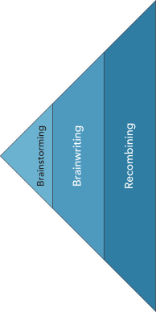
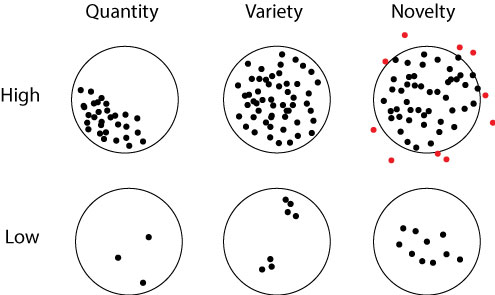

8 Ideate Many Solutions
Exploratory, divergent use of creativity tools to generate many solution concepts
Solution Ideation

Having defined and validated an unmet need of our people, we turn to innovating to fill that need. Innovating encompasses three stages: the divergent phase of ideating solutions, the convergent process of hypothesis formation, and the conclusive phase of testing the solution. Our focus now shifts to designing the right solution for the validated customer pain, blending creativity with structured exploration to discover innovative solutions.
The double diamond process, a visual representation of the innovation journey, underscores two pivotal phases: problem discovery and solution development. In the first diamond, the objective is to ‘design the right thing’ by identifying and validating customer pain. The second diamond revolves around ‘designing the thing right,’ where you ideate, develop, and refine potential solutions.
Solution ideation is deliberately generative, leveraging imagination and creativity to generate as many ideas for solutions as possible toward our goal of getting good ideas to solve the pains of our people.
If you want to have good ideas, you must have many ideas. Most of them will be wrong, and what you have to learn is which of them to throw away. — Linus Pauling1
The first step in this process is to get many ideas; in the following chapter we will focus on evaluating them to know which ones to throw away.
Principles of Creativity
Ideation is not just about brainstorming; it’s an exploratory experiment where each idea, no matter how unconventional, adds value to the creative pool. Creating a safe and open environment is crucial for the proliferation of ideas. It is essential to avoid prematurely judging or discarding ideas which may stifle the flow of creativity and potentially prevent the emergence of the best solutions. To nurture an environment conducive to divergent thinking, set clear ground rules with your team:
- Suspend all forms of judgment: Critique and evaluation have their place, but they come later in the process. During ideation, every idea is given space to breathe and evolve.
- Welcome the unconventional: Encourage and embrace unusual or out-of-the-box ideas. What might initially seem impractical or bizarre could pave the way to innovative solutions.
- Foster collaborative improvement: Instead of dismissing ideas, focus on how they can be combined, enhanced, and refined collaboratively. Remember, some of the most impactful ideas may initially evoke surprise or skepticism.
These principles echo principles of psychological safety in teams. By adhering to these principles, you create a supportive atmosphere where creative thinking can flourish. This approach not only generates a wider range of ideas but also builds a team culture that values openness and collaborative innovation.
Creativity in ideation stems from the ability to recombine existing ideas in novel ways. This process is akin to exploring an extensive card catalog in an old-fashioned library, where each card represents a distinct percept - a bit of knowledge, observation, memory, or impression. These percepts, when combined, can unexpectedly spark new ideas. Like a librarian sifting through a card catalog, the innovator combines different percepts, sometimes finding unrelated cards, while at other times discovering connections that form innovative ideas.
This notion of creativity as recombination suggests that every new experience, every piece of knowledge acquired, becomes a potential building block for future creative ideas. It’s the sum of these percepts that delineate the boundaries of one’s ‘adjacent possible,’2. The adjacent possible represents an ever-expanding frontier of creative possibilities, limited only by the scope of one’s experiences and knowledge. As society collectively expands its card catalog of percepts, the societal adjacent possible grows even more rapidly, suggesting an accelerating pace of discovery and innovation. This principle implies that the frontier of what can be discovered and created is not static but continually advancing, pushed forward by the recombination of our expanding collective knowledge.
These principles of creativity as the recombination of existing ideas suggest two methods to foster creativity: add more cards to your catalog and actively recombine them.
Fill Your Card Catalog
Fostering creativity begins with enriching your mental card catalog. Imagine your mind as a vast library, storing experiences, observations, and ideas like cards in a catalog. The more diverse and numerous these ‘cards’ are, the greater your potential for creative thought. Engaging in new experiences, traveling, and embracing different cultures can significantly boost your creative abilities. Research underscores the benefits of multicultural experiences in enhancing creativity, with even greater gains for those who immerse themselves deeply in other cultures.
Observation is a crucial skill in expanding your card catalog. Adopt the mindset of a traveler, even in familiar surroundings, to notice overlooked details and gain new perspectives. This constant state of awareness helps accumulate a wealth of experiences, ready for creative recombination.
Collaboration also plays a vital role in creativity. Networking with diverse individuals brings unique ideas and perspectives into your creative process. The goal is to interact with people who differ from you, thereby merging various ‘card catalogs’ and exponentially expanding your creative possibilities.
Remember, most of us can’t retain every detail of our experiences. To compensate, maintain an idea log to capture thoughts, sketches, and feelings. This habit, common among creative individuals, ensures that your insights are recorded and available for future associative thinking.
Recombine Cards and Think Associatively
Creative insights often emerge from associative thinking - making connections between seemingly unrelated concepts. This process involves deliberately combining different ‘cards’ from your mental catalog to generate new ideas.
One approach is to select two random objects or concepts and explore potential connections. This method can lead to innovative solutions, as demonstrated by the development of Apple’s iPod wheel controller, inspired by the combination of a padlock’s wheel and a digital music player.
However, many creative breakthroughs arise from serendipity - accidental discoveries made while seeking something else.3 Serendipitous creativity happens when a well-stocked mental catalog meets an inquisitive mind pondering a problem. In such moments, chance encounters with new ideas can spark creative solutions. The key to harnessing serendipity is a prepared mind, ready to connect disparate concepts in novel ways.
Measuring Creativity
The effectiveness of the ideation process can be assessed using three key criteria: quantity, variety, and novelty.
Quantity of Ideas (Fluency): The total number of ideas generated is a primary indicator of divergent thinking, often referred to as fluency. While a high count is desirable, it’s crucial that these ideas are not just variations on a theme but truly distinct concepts.
Variety in Ideas: Beyond sheer numbers, assess the diversity of your ideas. This involves categorizing ideas into distinct groups or themes and ensuring a broad range of concepts. Variety ensures that you explore multiple angles and possibilities, rather than iterating on a single theme.
Novelty of Ideas: Novelty examines how innovative or unconventional the ideas are. High novelty is characterized by ideas that push beyond the usual boundaries of feasibility. Don’t shy away from seemingly infeasible ideas, as they often lead to unique solutions that can be adapted into practical applications.
Together, these criteria help in ensuring that your ideation process is not just prolific, but also rich in diverse and innovative ideas. This approach maximizes the chances of uncovering truly groundbreaking solutions.

Brainstorming for Creativity
Brainstorming is a widely recognized and frequently used method for generating creative ideas. Its effectiveness lies in its ability to facilitate the recombination of ideas, essential for associative thinking. To maximize the benefits of brainstorming, consider the following guidelines:
Effective Brainstorming Techniques
Recording Ideas: Capturing ideas as they emerge is crucial. Using post-it-notes or a similar method allows for easy recording and later reorganization of ideas. This visual and physical manipulation of ideas can aid in further associative thinking and recombination.
Withholding Evaluation: One of the biggest challenges in brainstorming is the tendency to prematurely judge ideas. Remember, the goal is to explore a wide range of possibilities, not to filter them at this stage. Encourage an open-minded approach where no idea is too outlandish or dismissed too quickly. Even seemingly ‘bad’ ideas can spark innovative thoughts when combined with others.
Fostering Creativity: Encourage brainstorming sessions to focus not just on the quantity of ideas but also on their diversity and originality. Encourage participants to think outside their usual patterns and to consider unconventional approaches.
Recombining Ideas: Actively encourage the combination of brainstormed ideas in new ways. This recombination is where the magic of brainstorming really happens. By linking different concepts, you can uncover unique solutions that wouldn’t have been evident from a single idea.
Maximizing Brainstorming Outcomes
Create a Conducive Environment: Ensure the brainstorming environment is conducive to free thinking. This might mean a physical space that is comfortable and stimulating or a virtual space that encourages collaboration.
Diverse Participation: Include people with varied backgrounds and perspectives. Diversity in brainstorming sessions can lead to a richer array of ideas and a broader range of associative connections.
Use Facilitation Techniques: Sometimes, the use of a facilitator can help keep the brainstorming session focused and productive. They can guide the discussion, encourage quieter participants, and ensure the session stays on track.
Follow-up Sessions: Brainstorming shouldn’t be a one-off exercise. Schedule follow-up sessions to revisit, refine, and expand upon ideas. This iterative process can lead to more refined and innovative solutions.
By adhering to these principles, brainstorming can be a powerful tool in the creative process, leading to a plethora of innovative ideas and potential solutions to explore further.
6-3-5 Brainwriting
6-3-5 Brainwriting is an effective method for evolving and expanding upon ideas generated through brainstorming or other means.4 It leverages the collective creativity of a team by structuring the process of idea recombination. The method’s name reflects its format: 6 participants, each generating 3 new ideas based on prompts from others, within 5 minutes per round.
Conducting a 6-3-5 Brainwriting Session
Team Formation: Organize participants into groups of six. If the exact number isn’t feasible, adjust the group size while maintaining the spirit of collaborative idea generation.
Idea Exchange: Each participant starts with three ideas, either generated beforehand or during a brief brainstorming session. These ideas serve as the initial prompts for the brainwriting process.
Idea Generation Rounds: Participants pass their ideas to the person on their right and use the received ideas to inspire three new concepts. This step is repeated for six rounds, with each round lasting five minutes, ensuring a rapid and dynamic exchange of thoughts.
Creative Recombination: Encourage participants to creatively recombine elements from the received ideas to generate novel concepts. This process not only multiplies the number of ideas but also enhances their diversity and originality.
No Judgment Zone: Similar to brainstorming, the brainwriting process is judgment-free. Ideas are not critiqued during the session, allowing for uninhibited creativity and exploration.
Adapting the Method
Flexible Configuration: If the team size or time constraints differ, modify the method accordingly. The key is to maintain a fast-paced, collaborative environment where ideas continuously evolve.
Documentation: Ensure that all ideas are documented for later review and further development. This record will be valuable during the convergent phase of idea evaluation.
Diverse Perspectives: Include participants from different backgrounds or with varied expertise to enrich the session with a wide range of perspectives.
Follow-up Discussions: After the session, organize discussions to reflect on the generated ideas, identifying those with the most potential for further development.
Brainwriting is our primary ideation tool because it has important advantages built in.
- Prevents Premature Judgment: In brainwriting, since everyone is focused on generating ideas, there’s no room for immediate critique or dismissal of ideas. This preserves the flow of creativity and ensures that even unconventional or initially absurd-sounding ideas get a chance to be developed and possibly lead to innovative solutions.
- Utilizes Collective Intelligence: The method taps into the diverse ‘card catalogs’ of all team members, ensuring a rich amalgamation of experiences, perspectives, and knowledge. This collective intelligence is crucial in generating more varied and potentially groundbreaking ideas.
- Encourages Novelty and Feasibility Balance: By encouraging participants to think freely and even consider infeasible options, brainwriting stimulates out-of-the-box thinking. This approach can lead to the discovery of novel solutions that might not emerge in a more constrained setting. At the same time, the iterative nature of the process allows these ideas to be refined into feasible solutions.
- Maintains a Safe Collaborative Environment: Brainwriting fosters a psychologically safe space where team members feel comfortable sharing their ideas without fear of criticism. This environment is crucial for creativity, as it encourages more open and honest idea sharing.
- Structured Yet Flexible: The structured format of brainwriting ensures that the session is focused and productive, while also being adaptable to different group sizes and constraints. This balance between structure and flexibility helps maintain the momentum and energy necessary for effective ideation.
- Encourages Serendipitous Connections: The process of passing ideas around and building upon them can lead to serendipitous connections between seemingly unrelated concepts. These unexpected associations are often at the heart of creative breakthroughs.
- Facilitates Idea Evolution: As ideas are passed and reinterpreted through different lenses, they evolve and mature. This evolution can lead to more refined and viable solutions, as each iteration adds depth and perspective to the original concepts.
- Equal Participation: Unlike traditional brainstorming, where dominant personalities might overshadow quieter team members, brainwriting ensures that everyone has an equal opportunity to contribute. This democratic approach can unearth valuable ideas that might otherwise remain unspoken.
6-3-5 Brainwriting excels in fostering associative thinking and collaborative creativity. By systematically exchanging and evolving ideas, it generates a richer and more varied set of potential solutions, making it an invaluable tool in the divergent phase of ideation.
SCAMPER for Enhanced Ideation
SCAMPER is a powerful creativity tool that prompts the recombination of existing ideas, enhancing fluency, variety, and novelty in ideation. Each element of SCAMPER represents a different approach to thinking about and modifying existing solutions or ideas:
Substitute
- Substituting elements in an existing idea can lead to novel outcomes, increasing the variety of ideas generated.
- Example: Replacing a material in a product design to create an entirely new category.
Combine
- Combining features from various solutions can lead to innovative outcomes with unexpected synergies.
- Example: Merging smartphone features with a traditional camera for a new type of portable photography device.
Adapt
- Adapting solutions to new contexts or needs broadens the range of possibilities and introduces a diversity of ideas.
- Example: Adjusting an existing product to fit a different market or user need.
Modify
- Modifying or exaggerating aspects of a solution encourages radical thinking and novel idea generation.
- Example: Exaggerating a feature to see how it changes the functionality or appeal of a product.
Put to Another Use
- Encourages thinking about how a solution could solve different problems or fit new contexts.
- Example: Finding a new application for a technology in a different industry.
Eliminate
- Simplifying a solution by removing elements can reveal its core value and lead to streamlined, efficient innovations.
- Example: Removing a complex feature to simplify user interaction.
Reverse
- Reversing the order or direction of a solution can lead to innovative breakthroughs and change perspectives.
- Example: Reversing a process in a product to explore new ways of operation or use.
SCAMPER encourages a structured yet flexible approach to creative exploration, making it highly effective for expanding the adjacent possible in problem-solving. By examining problems and solutions from various perspectives, it fosters a rich set of potential innovations.
Conclusion
In the journey of innovation, the adage that “the best way to have a good idea is to have many ideas” rings particularly true. This mirrors the earlier stage of accumulating a mountain of data to discover a viable pain hypothesis. Similarly, creating a mountain of solution ideas enhances the probability of uncovering a truly effective solution.
Embracing Quantity, Variety, and Novelty
- Generating a large quantity of ideas increases the odds of including valuable ones.
- Encouraging variety in ideation ensures exploration of different perspectives and contexts, further enriching the pool of ideas.
- Fostering novelty pushes boundaries and can lead to groundbreaking innovations that might otherwise be overlooked.
Innovators who fixate on a single idea risk the pitfall of low probability success. This singular focus often lacks the necessary breadth (quantity), diversity (variety), and innovation (novelty) crucial for generating impactful ideas. Such an approach contributes to the high failure rate commonly seen in innovation and entrepreneurship endeavors.
Beyond the First Idea
- It’s crucial to resist the urge to immediately test the first idea with customers. While this might seem efficient, it often leads to missed opportunities and potential failure.
- A careful and deliberate process of ideation, as outlined in this chapter, significantly enhances the quality of the idea pool.
As we transition from ideation to the next phase of innovation, remember Linus Pauling’s wisdom on the importance of discarding bad ideas. Our next challenge lies in effectively sifting through our collection of ideas, identifying and retaining those with the most promise while letting go of the rest. This selective process is critical in steering our innovation journey towards success.
Linus Pauling won two Nobel prizes, one in chemistry (1954) for his work on the nature of the chemical bond and a second one in peace (1962) for his efforts to raise awareness about the dangers of nuclear weapons and his advocacy for nuclear disarmament. In this case we leverage his advice on how to get good ideas (Pauling 1995).↩︎
The adjacent possible comes from the pioneering work of Stuart Kauffman (1995) which was extended to the logic of creativity and ideation by Steven Johnson (2010)↩︎
The concept originates from tales of the princes of Serendip, who frequently made unexpected discoveries.↩︎
Brainwriting was pioneered by Bernd Rohrbach (1969) for marketing settings. It excels in all creative settings.↩︎